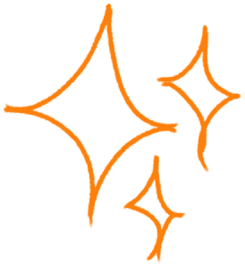

Isabel Peebles
Isabel Peebles{{ e.year }}
{{ e.org }}
{{ e.role }}
{{ e.summary }}
{{ e.outputsLine }}

I'm a second-year Economics and Data Science student at UCL, endlessly curious about how data, design, and AI shape the decisions we make, and the way those decisions get communicated back to people.
Most of my time goes into building and creating things: analytical tools and dashboards from scratch, data pipelines that turn messy numbers into something useful, and branding or web design projects on the side.
Outside of that, I paint and draw when I find the time, and generally just enjoy making things look pretty, whether it's a diagram or a canvas.
Right now, I'm especially interested in how AI is reshaping the economy and how people interact with data day to day. Always looking for the next thing to build :)
{{ e.year }}
{{ e.role }}
{{ e.summary }}
{{ e.outputsLine }}